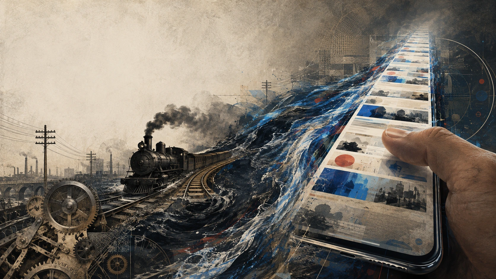

Intensificazione
Più mondo
nello stesso tempo
Velocità, simultaneità, mobilità, moltiplicazione degli stimoli.

Storia culturale · letteratura · scienze sociali
Come la modernità ha accelerato il tempo — e perché letteratura, scuola e pensiero non devono fermare il movimento, ma restituirgli forma.
L’uomo moderno desidera intensità, novità, movimento e stimolo; ma ha bisogno anche di arresto, memoria e forma per comprendere ciò che vive. Non sono due umanità contrapposte: sono due domande dentro la stessa persona.
«Il problema nasce quando il nuovo sostituisce ciò che è appena accaduto prima che possa diventare esperienza pensata.»
Intensificazione
Velocità, simultaneità, mobilità, moltiplicazione degli stimoli.
Arresto riflessivo
Selezione, memoria, confronto, ritorno, revisione e forma.
03 — Vedere il movimento
La cronofotografia compie il paradosso fondamentale della modernità: scompone una continuità in stati visibili. Il cinema li ricompone; la pittura futurista proverà a mostrarli nello stesso istante.
05 — Il salto digitale
La locomotiva comprime lo spazio. Lo smartphone comprime la distanza fra contesti semantici: in pochi secondi passiamo da una conversazione privata a una guerra, da una lezione a un acquisto, da un volto a una pubblicità.
Lo scroll non ha inventato il desiderio di novità. Ha ridotto quasi a zero l’attrito necessario per soddisfarlo di nuovo.
Binari, fabbriche, città e motori rendono l’accelerazione visibile nello spazio.
Il corpo resta fermo mentre gli oggetti dell’attenzione si sostituiscono.
06 — Le evidenze
Esistono costi attentivi misurabili. Ma gli effetti sul benessere sono spesso piccoli, eterogenei e dipendono da persona, attività, contesto e alternativa disponibile.
Una notifica può interrompere la prestazione anche senza risposta al telefono.
Effetto immediato: non dimostra un danno permanente.
L’associazione media fra tecnologia digitale e benessere adolescenziale è negativa ma molto piccola.
Studio correlazionale; lo “screen time” aggrega usi differenti.
Gli effetti dei social sul benessere cambiano molto da adolescente ad adolescente.
Campione limitato ed effetti di breve periodo.
Nel compito studiato, i video brevi peggiorano la memoria prospettica rispetto al riposo.
Sessanta partecipanti; compito e formato specifici.
Bloccare Internet mobile può migliorare attenzione sostenuta, salute mentale e benessere.
Aderenza bassa e partecipanti già motivati a ridurre l’uso.
La conclusione seria: togliere uno stimolo non basta. Conta che cosa prende il suo posto: socialità in presenza, attività fisica, natura, lettura, progetto, silenzio.
sistemi educativi con un divieto nazionale dei telefoni a scuola nel marzo 2026
UNESCO GEM Report ↗07 — Il freno esterno
Una regola scolastica può funzionare come dispositivo di impegno collettivo: protegge un bene comune — l’attenzione condivisa — dalla ricompensa alternativa sempre disponibile. Ma se rimane puro controllo, rischia di produrre obbedienza senza competenza.
Il criterio non è la severità del freno, ma la capacità di restituire progressivamente agency. Dati PISA 2022 ↗
08 — La proposta
La categoria adeguata non è la lentezza, ma il ritmo: alternare intensità e sedimentazione, immersione e distanza, azione e revisione. La letteratura non è un freno a mano; è una trasmissione che permette di cambiare rapporto fra velocità diverse.
Ogni dispositivo non aggiunge soltanto velocità: ridefinisce la soglia oltre la quale ciò che era normale appare troppo lento.
1844
L’informazione si separa dal trasporto fisico: il presente diventa più simultaneo.
1883
La ferrovia impone una convenzione comune al mosaico dei tempi locali.
1894
Per comprendere il movimento, Marey lo arresta e lo scompone in una serie.
1899
La velocità diventa esperienza individuale di potenza, rischio e prestigio.
1913
Gesti e pause entrano nel calcolo economico a una granularità nuova.
oggi
L’accelerazione non sposta più il corpo: comprime la distanza fra contesti.
 Immagine: Wikimedia Commons ↗
Immagine: Wikimedia Commons ↗ Immagine: Wikimedia Commons ↗
Immagine: Wikimedia Commons ↗ Immagine: Wikimedia Commons ↗
Immagine: Wikimedia Commons ↗ Immagine: Wikimedia Commons ↗
Immagine: Wikimedia Commons ↗ Immagine: Wikimedia Commons ↗
Immagine: Wikimedia Commons ↗ Immagine: Wikimedia Commons ↗
Immagine: Wikimedia Commons ↗